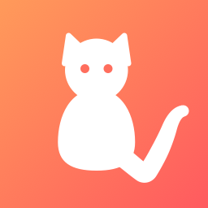

TailTickPrivacy Policy
Effective 19 October 2026
TailTick is an iPhone app for planning and tracking a pet's daily care. This policy explains what information TailTick collects, why, who it's shared with, and the choices you have.
TailTick is operated by Abhay Singh, an individual developer based in India ("we", "us"). You can contact us at abhayiitr5001@gmail.com.
Information we collect
| What | Details | Why |
|---|---|---|
| Account | Your name, email address and an account ID from Sign in with Apple or Google. If you choose "Hide My Email", we receive an Apple relay address instead of your real email. | To sign you in and show your name to people in your household. |
| Your pet | Name, type, and anything you choose to add: breed, birthday, gender and notes. | To show and share your pet's care. |
| Schedule and history | Tasks, their times and instructions, and for each day which tasks were done, by whom, when, and any note added. We also store your pet's time zone. | To build the daily checklist, reminders and reports. |
| Photos | Photos you take as proof that a task was done. On the Free plan they stay on your phone. With Premium they're uploaded so your household can see them. Photos are resized and their location data is removed before saving. | To show proof of care. |
| Household | Who is in your household, and invite codes you create. | To let family and helpers share a pet. |
| Device | A random ID created for each installation of the app, and a push notification token from Apple. | To limit Free accounts to one phone, and to send reminders and "task done" notifications. |
| Purchases | Whether you have Premium, which plan, and when it renews or ends. Payments are handled by Apple; we never see your card or payment details. | To unlock Premium features. |
| Technical logs | Our service providers keep short-lived logs, such as IP address and time of requests. | To keep the service secure and working. |
TailTick uses your camera only when you choose to take a photo. It doesn't access your photo library, contacts or location.
Who can see your information
- Your household. If you invite people to help with your pet, they can see your pet's details, schedule, history, notes and photos, and your name. If you help with someone else's pet, they and their household can see your name and the tasks you mark done, with your notes and photos.
- Service providers that run TailTick for us, only for that purpose:
- Supabase: database, sign-in, photo storage and server functions.
- Apple: Sign in with Apple, push notifications and App Store payments.
- Google: Sign in with Google, if you use it.
- RevenueCat: managing subscriptions. It receives your account ID and purchase details.
- Legal reasons. If required by law, or to protect the rights and safety of users or others.
We don't sell your information or share it for advertising.
Where it's stored
Your information is stored on servers operated by our service providers, which may be in a country other than yours. They protect it with encryption in transit and access controls, and only people in your household can access your pet's data through the app.
How long we keep it
We keep your information while your account exists. When you delete your account, we delete your profile, your pet and its schedule, history and photos, your household memberships, and your subscription records at RevenueCat. Tasks you marked done in other people's households stay in their history, without your name or photos. Copies in our providers' backups and logs are removed on their regular schedule.
Photos kept on your phone are deleted when you delete your account or the app. They may also be in your iPhone or iCloud backups, which Apple manages.
Your choices and rights
- Correct your name and pet details in the app at any time.
- Delete your account and its data: in the app, go to Account → Delete account. If you can't use the app, email us and we'll delete it for you.
- Turn off notifications in the app or in iPhone Settings.
- Get a copy of your information, or ask questions about it, by emailing us.
Depending on where you live, including under India's Digital Personal Data Protection Act and the EU and UK GDPR, you may have further rights, such as to object to or restrict how we use your information, or to complain to your data protection authority. We use your information to provide the service you asked for, and with your consent where needed, such as for notifications and camera access. We reply to requests within 30 days.
Children
TailTick isn't directed at children under 13, and we don't knowingly collect their information. If you believe a child has given us information, contact us and we'll delete it.
Changes to this policy
We'll post any changes on this page and update the date above. If a change is significant, we'll also tell you in the app.
Contact
For privacy questions or requests, including as grievance officer under Indian law: Abhay Singh, abhayiitr5001@gmail.com.